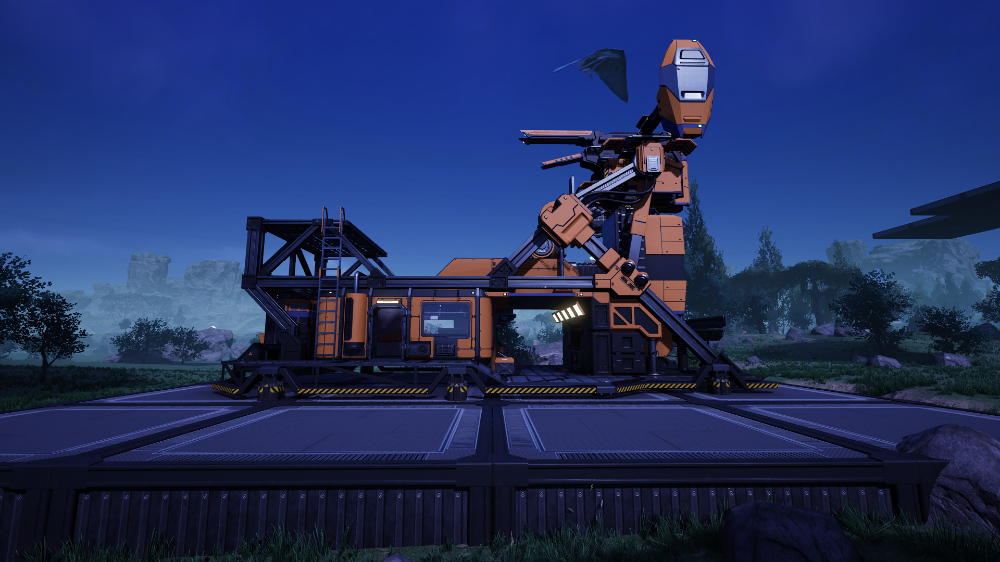
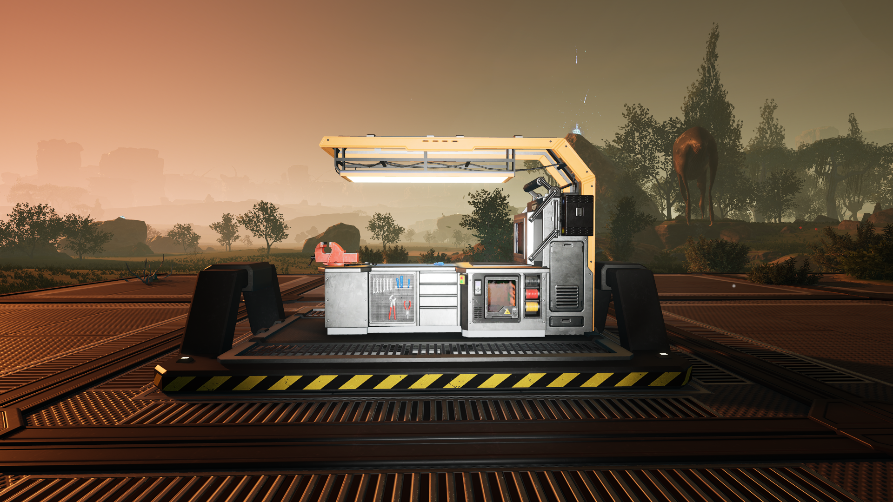
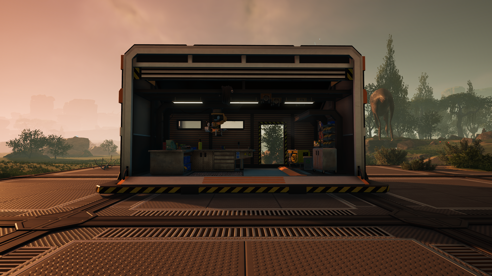
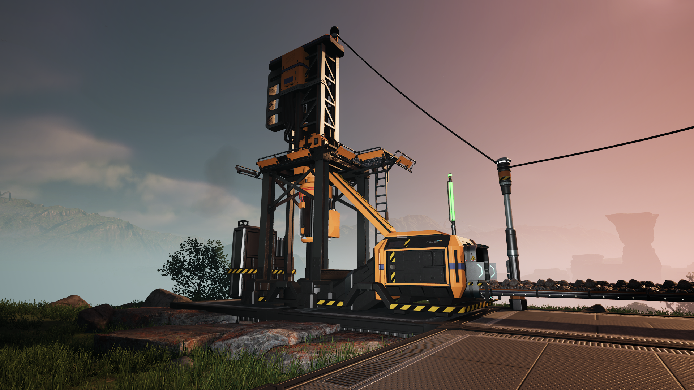
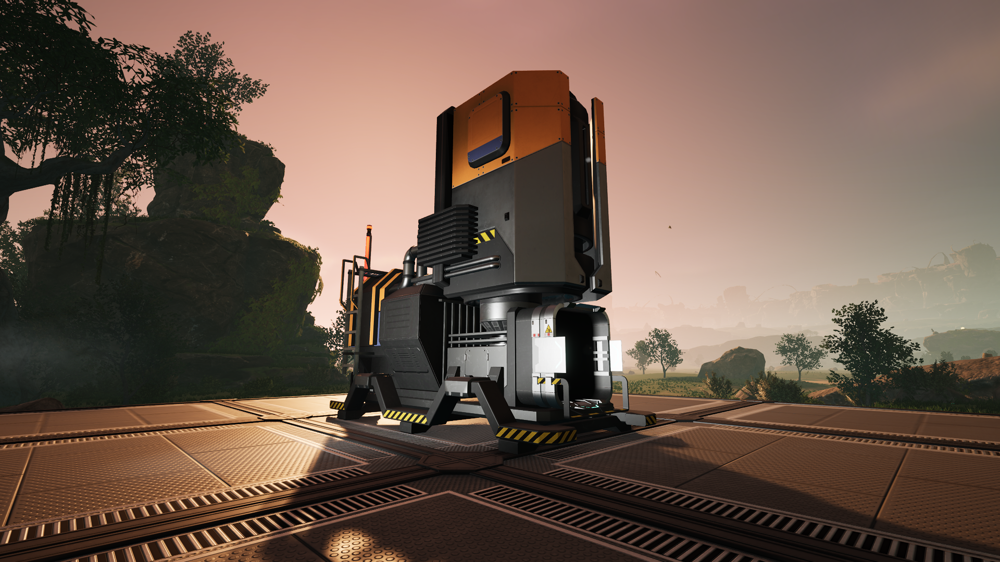
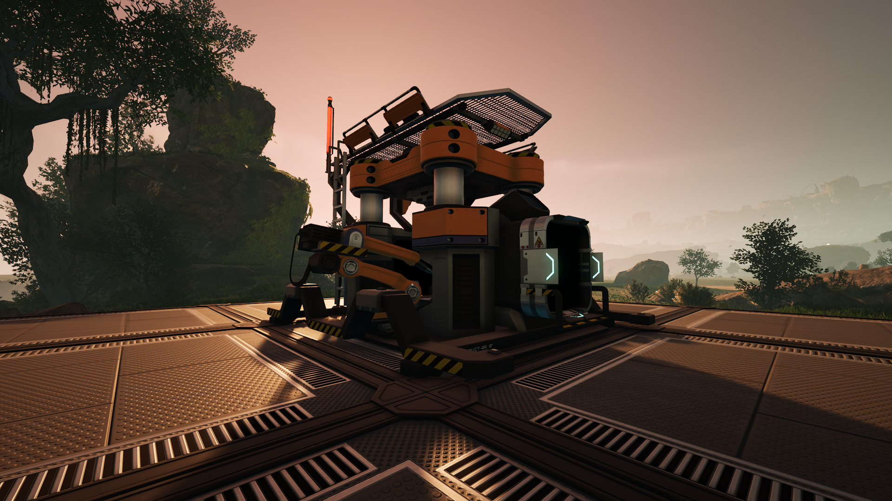
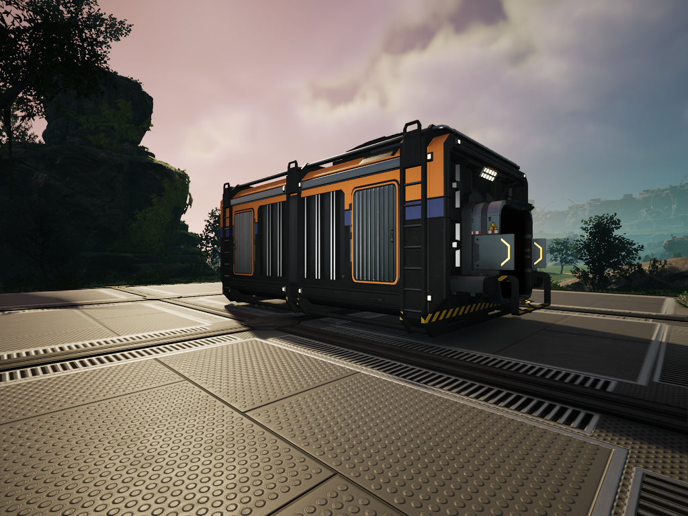

Factory Buildings
These are the basic constructs you will be using in order to grow you factory. Understanding these buildings will go a long way. Feel free to select a building to learn more details about it.
| Building | Description |
|---|---|
|
Hub  |
The heart of your factory. This is where you complete FICSIT milestones to unlock additional blueprints of buildings, vehicles, parts, equipment etc. |
|
Craft Bench  |
Allows you to manually craft a large range of different parts. These parts can then be used in construction of different factory buildings, vehicles and equipment. |
|
Equipment Workshop  |
Used to manually craft equipment. |
|
Miner  |
Extracts solid resources from the resource node it is built on. The normal extraction rate is 60 resources per minute. The extraction rate is modified depending on resource purity. Outputs all extracted resources onto connected conveyor belts. |
|
Smelter  |
Smelts ore into ingots. Can be automated by feeding ore into it with a conveyor belt connected to the input. The produced ingots can be automatically extracted by connecting a conveyor belt to the output. |
|
Constructor  |
Crafts one part into another part. Can be automated by feeding parts into it with a conveyor belt connected to the input. The produced parts can be automatically extracted by connecting a conveyor belt to the output. |
|
Storage Container  |
Contains 24 slots for storing large amounts of items. Has an input and output for conveyor belts. |